Como transcrever ASO físico para o eSocial (S-2220) pelo Bevart
Recebeu o ASO em papel de uma clínica parceira? Veja como transcrever os exames, vincular a Tabela 27 e enviar o evento S-2220 direto ao eSocial no Bevart.
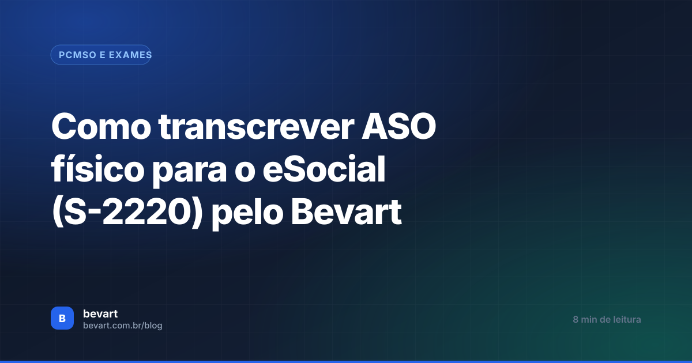
O essencial em 30 segundos
- Solução híbrida exclusiva: Além de gerar ASOs 100% digitais no módulo de atendimento clínico, o Bevart conta com o Formulário Único ASO (S-2220) para transcrever laudos impressos de clínicas credenciadas em minutos.
- Tabela 27 simplificada: Não precisa memorizar códigos: digite o nome do exame (como a avaliação clínica obrigatória ou exames complementares) e o Bevart insere o código da Tabela 27 do eSocial automaticamente.
- Médicos examinador e coordenador: Localize ou cadastre rapidamente o médico que assinou o ASO físico e o médico responsável pelo PCMSO da empresa cliente.
- Transmissão direta com certificado A1: Altere o ambiente para Produção, transmita com a procuração digital da consultoria e acompanhe até o status Validado com recibo oficial.
Na rotina real de consultorias e departamentos de SST, nem todo exame ocupacional é feito dentro do próprio consultório. É comum receber ASOs físicos em papel emitidos por clínicas parceiras, laboratórios credenciados no interior ou médicos terceirizados que atendem os clientes in loco.
O problema é que o eSocial não aceita papel: o evento S-2220 (Monitoramento da Saúde do Trabalhador) precisa ser transmitido eletronicamente até o dia 15 do mês seguinte, com todas as informações clínicas, códigos da Tabela 27 e dados do médico examinador rigorosamente estruturados.
No Bevart, você tem uma flexibilidade única: se o atendimento médico for próprio, você gera o ASO digital completo pelo prontuário do sistema; se o ASO veio em papel de um terceiro, você utiliza o Formulário Único de Transcrição de ASO para alimentar e transmitir o S-2220 em menos de dois minutos.
Duas formas de operar o S-2220 no Bevart
A maioria dos softwares de medicina ocupacional obriga o usuário a cadastrar um agendamento fictício, abrir um prontuário médico completo e simular uma consulta inteira apenas para conseguir digitar um ASO que já veio pronto em papel de outra clínica. Isso gera lentidão extrema e sobrecarrega a equipe da consultoria.
O Bevart resolveu isso criando dois caminhos complementares:
Atendimento Médico Digital
Para consultas realizadas na sua própria clínica ou médico interno. O médico preenche a anamnese, emite o ASO digital com assinatura eletrônica e o sistema já dispara o S-2220.
Formulário Único de Transcrição
Para ASOs recebidos em papel de redes credenciadas. Você digita apenas os dados essenciais cobrados pelo eSocial em uma tela unificada e transmite na hora.
O que deve constar no evento S-2220 do eSocial
Para que a transcrição do papel seja aceita sem erros no eSocial, você precisa identificar no formulário impresso:
- Tipo de exame ocupacional: Admissional, Periódico, Retorno ao Trabalho, Mudança de Riscos Ocupacionais, Demissional ou Monitoração Pontual.
- Data de emissão do ASO e resultado: Apto, Inapto ou Apto com Restrições.
- Procedimentos diagnósticos (Tabela 27 do eSocial): Todo ASO possui obrigatoriamente a Avaliação clínica ocupacional (código 0295), além dos exames complementares (audiometria, espirometria, ECG, EEG, exames laboratoriais, etc.), com as respectivas datas de realização.
- Médico Examinador: Nome, CRM, UF do CRM e CPF do médico que assinou o ASO físico.
- Médico Responsável pelo PCMSO: Dados do médico coordenador/responsável pelo programa na empresa contratante (quando aplicável).
Transmita ASOs digitais e transcritos com o mesmo sistema
O Bevart unifica o atendimento clínico, o controle de vencimentos do PCMSO e a mensageria direta do S-2220 para consultorias e clínicas de SST.
Criar conta grátisPasso a passo: Como transcrever um ASO em papel no Bevart
Acompanhe o roteiro com as telas do sistema para transcrever o ASO físico e realizar o envio para o eSocial:
1. Configurar o Certificado Digital e Transmissor
Se você ainda não configurou o transmissor, acesse o menu superior direito da tela do Bevart e clique em Transmissor eSocial.
Cadastre o seu Certificado Digital A1 (.pfx ou .p12). No caso de consultorias, cadastre o certificado da sua própria empresa: seus clientes outorgam a procuração eletrônica no e-CAC e você transmite os eventos de todos eles sem precisar de múltiplos certificados.
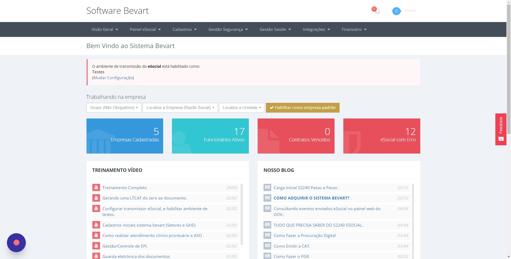
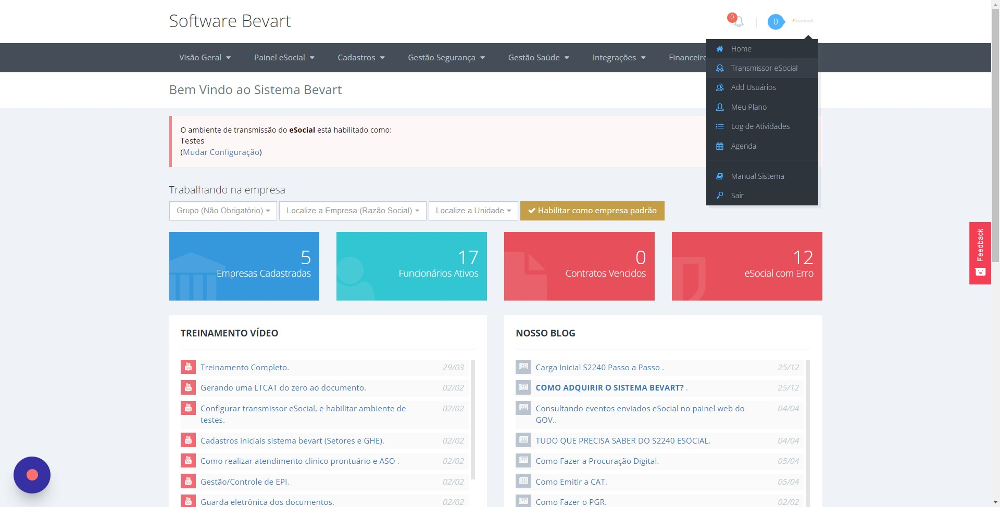
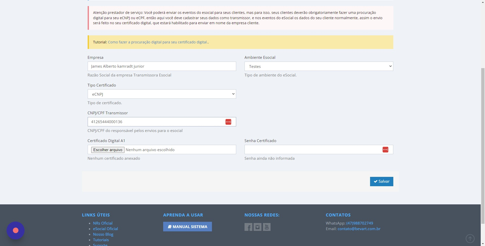
2. Acessar o Formulário Único no Painel S-2220
No menu lateral, vá em Painel eSocial → Evento S-2220 e clique no botão "Enviar usando Formulário Único ASO (S2220)".
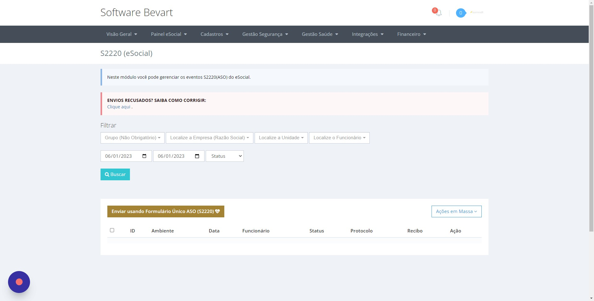
3. Definir o Ambiente como PRODUÇÃO
Logo no topo do formulário, certifique-se de que o campo Ambiente está selecionado como PRODUÇÃO para que o evento tenha validade legal e gere recibo oficial no eSocial.
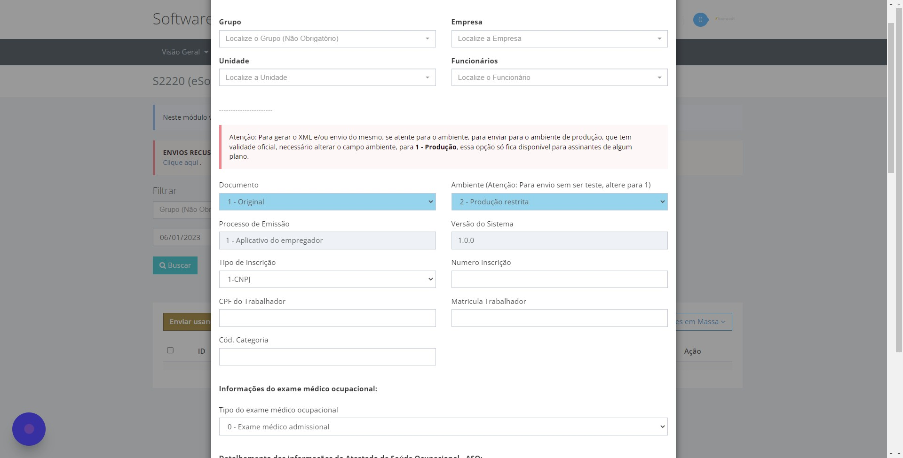
4. Selecionar Empresa, Colaborador e Dados do ASO
Preencha os dados do cabeçalho do exame físico:
- Selecione a Empresa, Unidade, Setor e Função;
- Localize o Funcionário pelo nome ou CPF;
- Informe o Tipo de Exame (ex.: Admissional, Periódico, Demissional, etc.);
- Insira a Data de Emissão do ASO conforme consta no papel assinado pelo médico;
- Marque o Resultado do ASO (Apto ou Inapto).
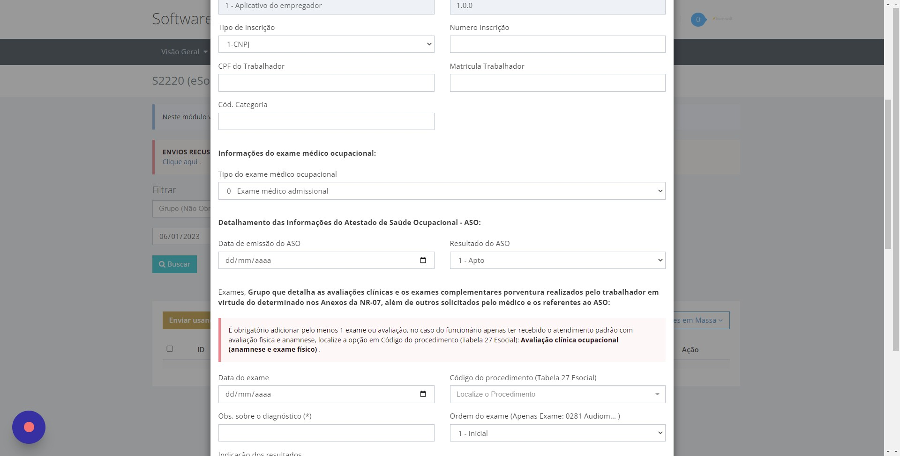
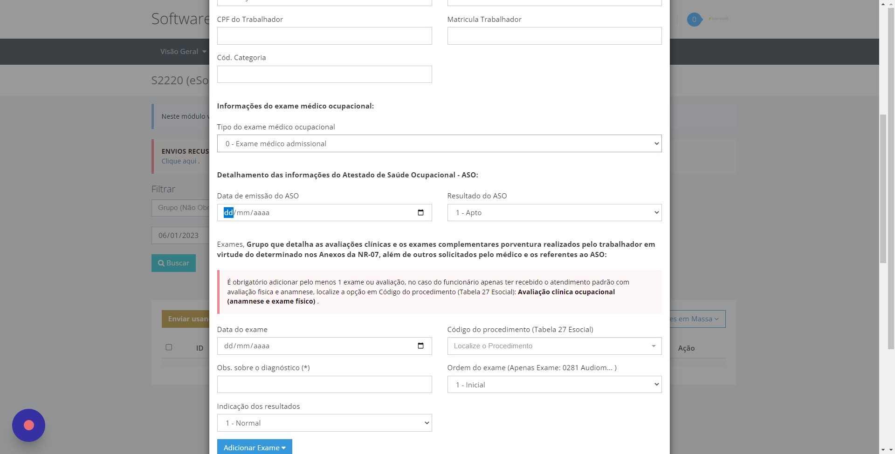
5. Inserir os Exames Conforme a Tabela 27 do eSocial
O eSocial exige que todo S-2220 contenha ao menos um procedimento diagnóstico. O exame clínico padrão é a "Avaliação clínica ocupacional (anamnese e exame físico)", representada pelo código 0295.
No Bevart, você não precisa decorar códigos de tabelas: basta começar a digitar o nome do exame no campo de busca e o sistema já vincula o código correspondente da Tabela 27 automaticamente.
- Se houver exames complementares no papel (audiometria, hemograma, raio-X de tórax, etc.), adicione cada um com a respectiva data de realização e ordem (Inicial ou Sequencial);
- Informe se o resultado foi normal ou alterado.
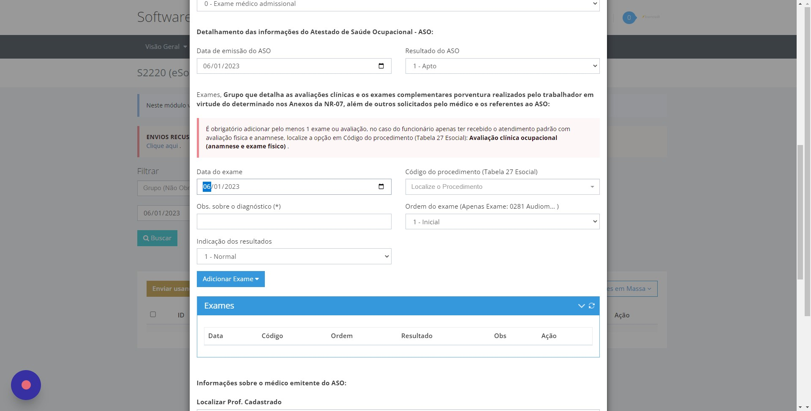
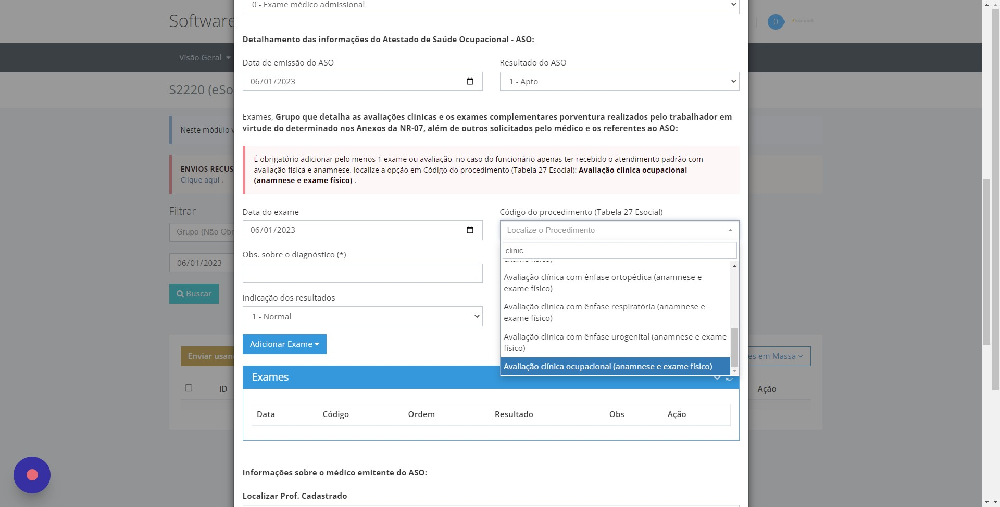
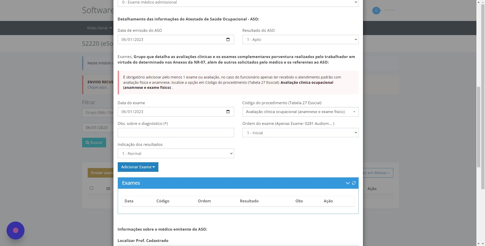
6. Identificar o Médico Examinador e o Responsável pelo PCMSO
No formulário físico, verifique o carimbo e a assinatura do médico examinador:
- Clique em "Localize o profissional da saúde";
- Se o médico já foi utilizado anteriormente, basta selecioná-lo na lista de busca rápida por Nome ou CRM;
- Se for a primeira vez que você lança um laudo desse médico, clique para cadastrar o Nome, CPF, CRM e UF do conselho regional;
- Clique em "Adicionar Médico Selecionado" para vincular o profissional ao ASO;
- Caso a empresa possua um médico coordenador/responsável pelo PCMSO diferente do examinador, vincule também os dados do responsável técnico.
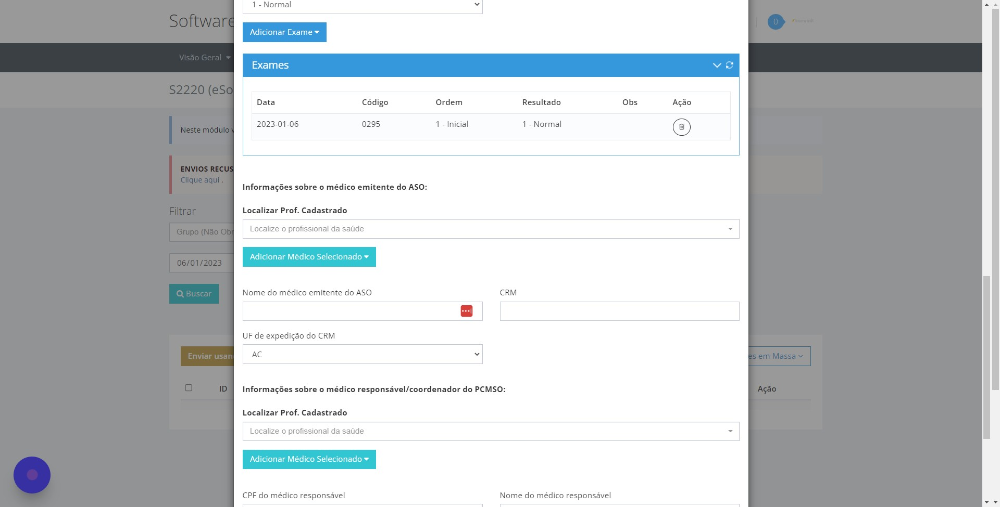
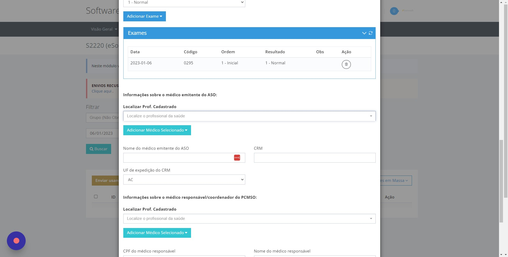
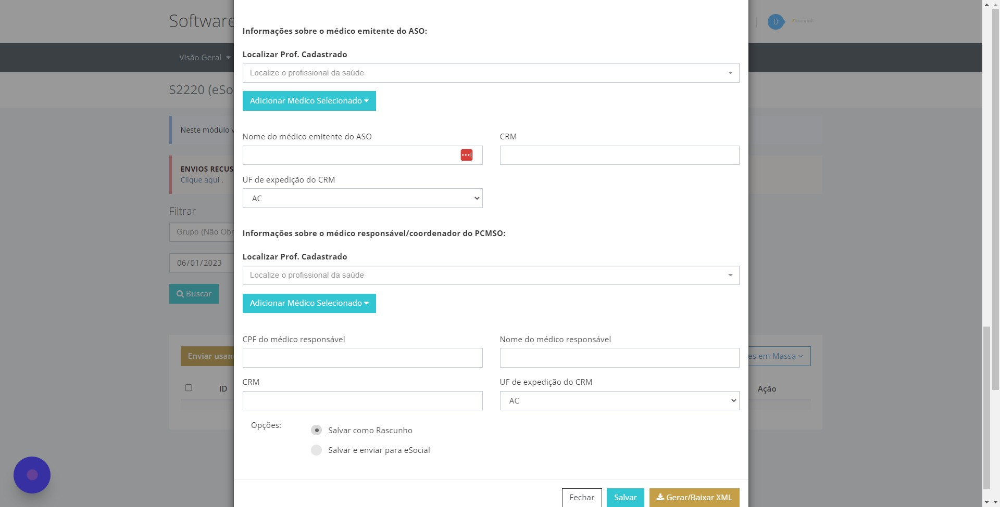
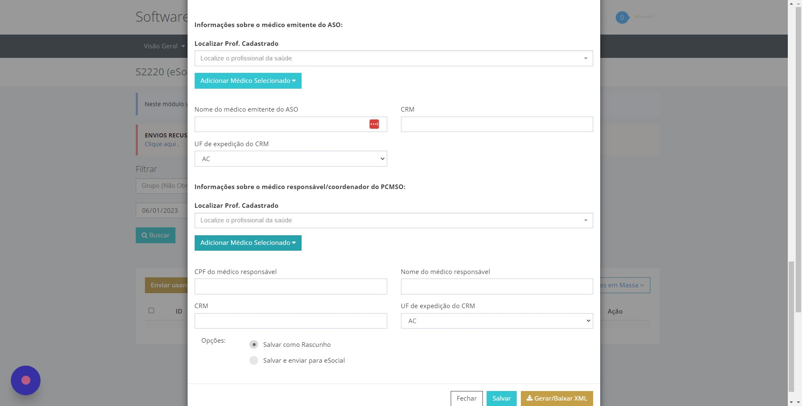
7. Salvar e Transmitir ao eSocial
Após conferir os dados transcritos do papel, desça até o final da página e clique no botão Salvar.
O Bevart irá gerar o XML do evento S-2220, assinar digitalmente com o certificado A1 configurado e enviar diretamente para o webservice do eSocial.
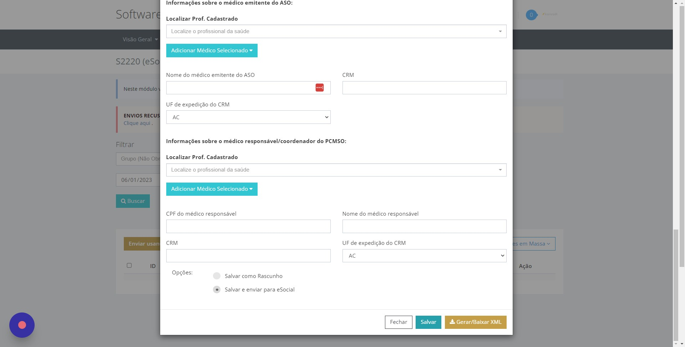
8. Acompanhar o Recibo no Painel S-2220
Retorne ao menu Painel eSocial → Evento S-2220. Na listagem de envios, você verá o colaborador com os seguintes status:
- Processando Envio: O evento foi assinado e está em fila de recepção pelo governo;
- Enviado: O eSocial recebeu o lote e gerou protocolo de entrega;
- Validado (com Recibo): O evento foi aprovado com sucesso. O número do recibo oficial fica gravado no sistema e o histórico de saúde do trabalhador está em dia perante a fiscalização.
O prazo de envio do evento S-2220 é até o dia 15 do mês subsequente ao da emissão do ASO. A única exceção é o ASO Admissional, que deve ser emitido antes do trabalhador iniciar as atividades e enviado preferencialmente junto com a admissão no eSocial.
Erros mais comuns ao transcrever ASOs em papel
| Erro no Preenchimento | Causa no eSocial | Como Resolver no Bevart |
|---|---|---|
| Esquecer a Avaliação Clínica | O eSocial rejeita o S-2220 se não houver pelo menos um procedimento da Tabela 27. | Sempre adicione o procedimento 0295 - Avaliação clínica ocupacional além dos exames complementares. |
| CRM ou UF Incorretos | Divergência entre o número do CRM e o estado de emissão do médico examinador. | Confira a UF exata do carimbo do médico no ASO físico ao cadastrar o profissional no Bevart. |
| Data de Exame Posterior ao ASO | Exame complementar com data mais recente que a data de conclusão do ASO. | A data do ASO deve ser igual ou posterior à data de realização do último exame complementar. |
| Envio em Ambiente de Teste | O evento foi enviado para o ambiente de Homologação e não tem validade legal. | Mantenha o campo Ambiente sempre selecionado como Produção no formulário. |
Perguntas frequentes
Posso transcrever ASOs emitidos por qualquer clínica externa?
Sim. O Formulário Único do Bevart foi desenvolvido exatamente para permitir que consultorias e empresas transcrevam laudos e ASOs emitidos por qualquer clínica parceira ou médico credenciado, desde que contenham os dados obrigatórios exigidos pelo eSocial (CRM, procedimentos e resultado).
Todo ASO precisa ter exames da Tabela 27 do eSocial?
Sim. Todo evento S-2220 exige obrigatoriamente ao menos um procedimento diagnóstico. Para exames sem procedimentos complementares, lança-se o código 0295 (Avaliação clínica ocupacional com anamnese e exame físico). Se houver exames complementares exigidos pelo PCMSO, eles devem ser listados individualmente.
Qual o prazo limite para transcrever e enviar o S-2220?
O evento S-2220 deve ser transmitido até o dia 15 do mês subsequente ao da realização do exame. Para o exame admissional, o ASO deve ser realizado antes do início do trabalho do colaborador.
Preciso ter o certificado digital da empresa cliente para enviar o ASO?
Não. Se você é uma consultoria de SST, basta que o cliente cadastre uma Procuração Eletrônica no e-CAC da Receita Federal concedendo poderes de eSocial. Com isso, você cadastra o Certificado Digital A1 da sua própria consultoria no Bevart e transmite os ASOs de todos os seus clientes em lote.
Qual a diferença entre o Atendimento Médico e a Transcrição de ASO no Bevart?
O Atendimento Médico é o módulo clínico completo para médicos que realizam a consulta dentro do sistema e assinam digitalmente o prontuário. A Transcrição de ASO pelo Formulário Único é uma tela simplificada para quando a empresa já tem o ASO em papel assinado por um terceiro e precisa apenas transmitir o S-2220 ao eSocial.